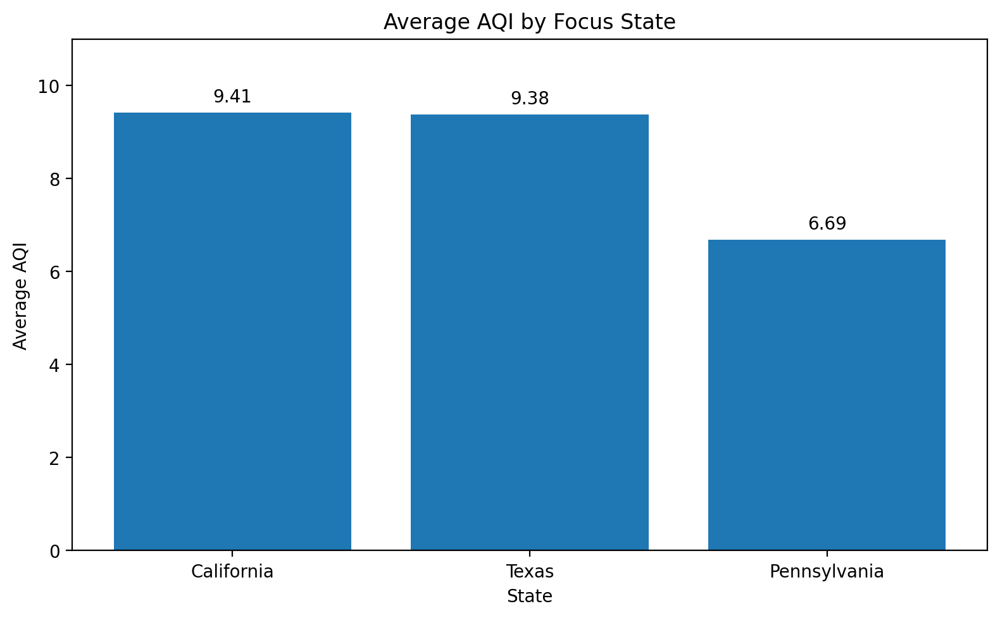

This project uses Python, pandas, and NumPy to explore air-quality data
from the U.S. Environmental Protection Agency. The analysis focuses on
understanding the structure of the dataset, comparing AQI readings across
states, and filtering the data to answer specific analytical questions.
Business Question
How can air-quality data be organized and analyzed to identify patterns,
compare geographic areas, and highlight locations with higher AQI values?
The chart below compares average AQI across California, Texas, and
Pennsylvania. California and Texas had similar average AQI values,
while Pennsylvania had a lower average across the observations analyzed.

Key Findings
California contained the largest number of observations among the
initial three states examined in the dataset.
Los Angeles County appeared more frequently than any other California
county in the dataset, making it useful for a more focused AQI analysis.
Boolean masking made it possible to isolate specific states and AQI
thresholds, including Washington observations with AQI values of
51 or higher.
NumPy was used to calculate measures such as minimum, maximum,
median, standard deviation, and the percentage of AQI readings
meeting a selected threshold.
What I Learned
This project strengthened my ability to work with pandas DataFrames,
NumPy arrays, Python data structures, reusable functions, filtering,
grouping, and summary statistics. It also reinforced how Python can
be used to organize, explore, and analyze larger datasets efficiently
while answering specific analytical questions.
Connect With Me
Explore more of my work, professional experience, and data
visualization projects.